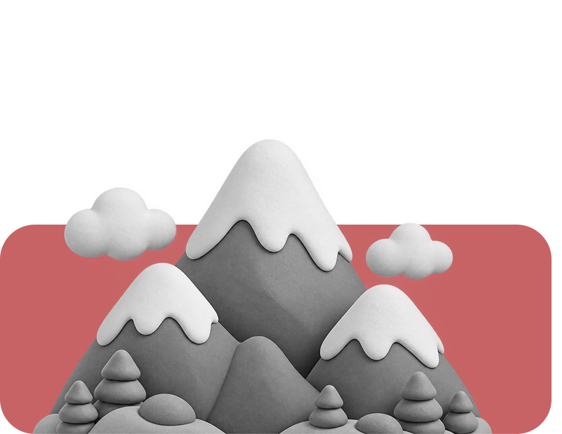
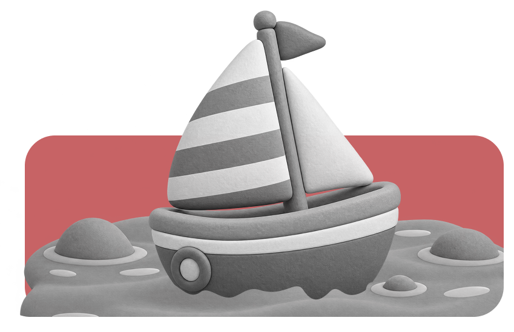
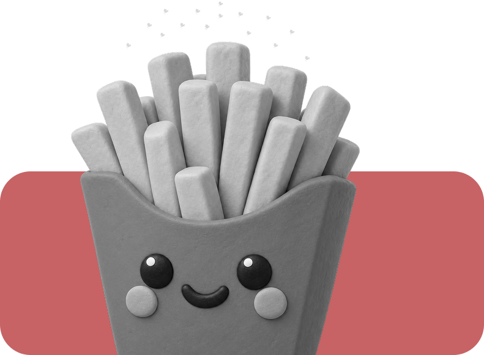
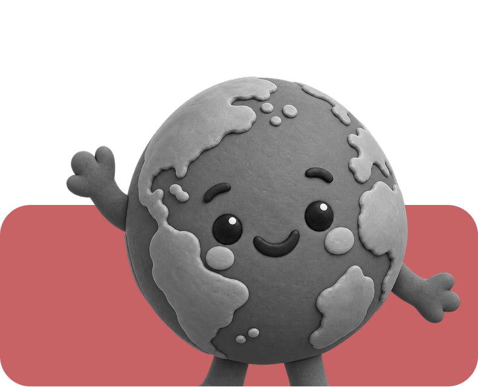

WEB DESIGN
PATATA
STORIA


Dalle montagne delle Ande alle patatine fritte: il viaggio sorprendente del tubero che ha conquistato il mondo.
Scorri in basso
Per una storia incredibile
01 / LE ORIGINI
NATA TRA LE MONTAGNE
Migliaia di anni fa, nelle regioni montuose del Sud America, le popolazioni andine iniziarono a coltivare questo tubero resistente e nutriente. Tra altitudini elevate e climi difficili, la patata divenne una risorsa fondamentale per la sopravvivenza delle comunità locali.


02 / LA DIFFUSIONE
UN BIGLIETTO PER L'EUROPA
Nel XVI secolo, gli esploratori portarono la patata in Europa dopo un lungo viaggio attraverso l'oceano. All'inizio fu accolta con curiosità e diffidenza. Con il passare del tempo, divenne un alimento fondamentale sulle tavole del continente.
03 / LA TRASFORMAZIONE
DA TUBERO A ICONA POP
Nel tempo, la patata ha assunto infinite forme: purè, gnocchi, crocchette e soprattutto patatine fritte. Da semplice alimento è diventata una vera icona della cultura pop contemporanea.


04 / CONCLUSIONE
PICCOLA PATATA GRANDE MONDO.
Dalle alte vette delle Ande alle cucine di ogni continente, la patata ha attraversato millenni, culture e confini. Una storia che dimostra come anche le cose più semplici possano lasciare un segno nel mondo.